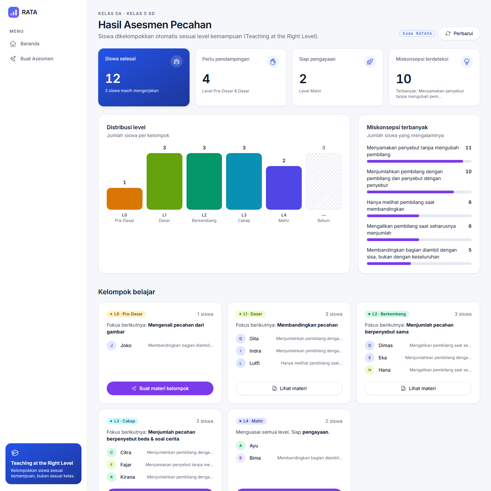
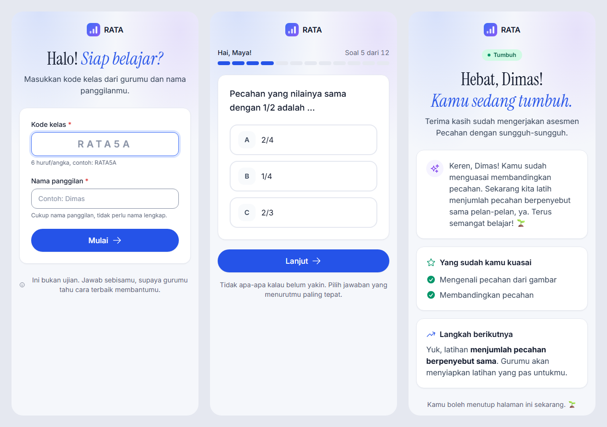
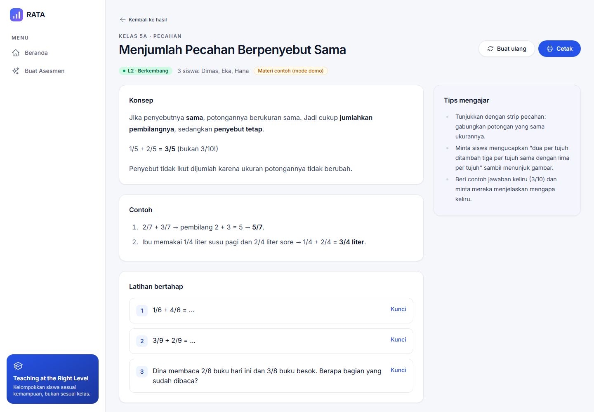

Ruang Ajar Tepat Level · SDG 4 Quality Education
Asesmen diagnostik berbasis AI yang mengelompokkan siswa sesuai kemampuannya dan menyiapkan materi berbeda untuk tiap kelompok dalam hitungan menit.
Problem statement
Skor Matematika PISA 2022 Indonesia, jauh di bawah rata-rata OECD. Membaca: 359.
Siswa per kelas. Guru tidak sempat membuat soal diagnostik, menganalisis per siswa, dan menyiapkan materi berbeda.
Kurikulum Merdeka mewajibkan asesmen diagnostik & pembelajaran berdiferensiasi, tetapi alatnya belum ada.
Akibatnya, siswa yang tertinggal makin tertinggal, dan siswa yang sudah mahir tidak tertantang.
Sumber: OECD PISA 2022 Results; Kemendikbudristek, Panduan Pembelajaran dan Asesmen Kurikulum Merdeka.
Kenapa solusi yang ada belum cukup
Solusi
AI menyusun 12 soal dalam 4 level kompetensi. Setiap pilihan salah dipetakan ke miskonsepsi. Guru meninjau lalu mempublikasikan.
Cukup kode kelas dan nama panggilan, tanpa akun. Satu soal per layar, dan hasilnya tanpa skor, dengan umpan balik yang menyemangati.
Dashboard mengelompokkan siswa per level dan menampilkan miskonsepsi terbanyak. Satu klik menghasilkan materi untuk tiap kelompok.
Pekerjaan diagnostik dan diferensiasi yang biasanya berhari-hari → beberapa menit.
Demo · Dashboard guru

Demo · Siswa & materi berdiferensiasi


Siswa: satu soal per layar, lalu hasil dengan metafora pertumbuhan. Guru: materi (konsep, contoh, 3 latihan, tips mengajar) yang siap dicetak.
Keputusan teknis inti
Prompt berskema → JSON 4 level × 3 soal + label miskonsepsi.
Cek jumlah soal, kunci, dan miskonsepsi. Jika tidak valid, AI diminta memperbaiki (retry dengan daftar error).
Lulus ≥2/3 di setiap level secara berurutan. Konsisten, bisa diaudit, dan diuji unit test.
Berdasarkan miskonsepsi kelompok. Hasil disimpan sehingga tidak dipanggil ulang.
Fallback otomatis (LLM_FAKE) memastikan demo tetap berjalan tanpa internet atau API key.
Tech stack & kualitas
| Backend | Laravel 12 · PHP 8.2 · SQLite |
| Frontend | Blade · Tailwind CSS v4 · Alpine.js (tanpa SPA) |
| AI | Claude API via SDK resmi anthropic-ai/sdk |
| Design system | 17 komponen Blade · token WCAG 2.2 AA · /ui-kit |
--no-ffcomposer run setup: satu perintah, langsung siap demoValue & dampak
Peta kemampuan kelas + materi siap pakai dalam hitungan menit. AI transparan: diberi label, bisa ditinjau, dan bisa dibuat ulang.
Tanpa skor, tanpa merah, dan tanpa kata "gagal". Level memakai metafora pertumbuhan: Benih → Berbuah
Menjalankan amanat Kurikulum Merdeka dan memeratakan kualitas belajar (SDG 4: inclusive & equitable).
Roadmap: asesmen ulang untuk mengukur kemajuan · bahasa daerah · mode offline (PWA) untuk daerah 3T · integrasi LMS/SIAKAD SEVIMA.
Repo: github.com/ahmdims/sevima-rata · Demo lokal: composer run setup && composer run dev · kode kelas demo RATA5A